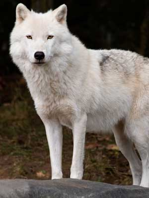

Aprender sobre las diferentes características de los lobos, es una manera de detener los conceptos erróneos que existen actualmente sobre estos animales. A continuación se presentan algunos datos que te ayudarán a entender algunas de las características de estos animales.

Son muy raras las veces que los lobos atacan a los seres humanos, sin embargo diariamente existen montones de historias acerca de estos ataques en la naturaleza.
El macho alfa y la hembra beta generalmente son los únicos dos que se reproducen en la manada.
La manada completa es responsable del cuidado de los lobos recién nacidos. Estos pequeños nacen en los lugares donde deciden sus madres y permanecerán allí durante las primeras cuatro semanas de vida. Cada recién nacido pesa aproximadamente una libra al nacer.
El promedio de vida de un lobo en su hábitat natural es de 6 a 8 años, y en cautiverio pueden vivir hasta 16 años.
El hogar de una manada de lobos puede ser desde 25 a 1.000 millas cuadradas.
Pueden correr hasta 35 millas por hora durante 20 minutos aproximadamente. La mayor parte del tiempo estos animales se encuentran a un ritmo lento, alrededor de 5 millas por hora.
Los lobos maduros tienen 42 dientes en la boca.
Los indios vieron al lobo como un animal poderoso y le tenían gran respeto.
Los lobos mudan la piel igual que los canes. Por lo general, esto ocurrirá en el verano cuando las temperaturas son más cálidas y su piel no necesite estar tan gruesa.
Un lobo tiene 100 veces mejor sentido del olfato que la media humana.
Los lobos viven en manadas, y estas manadas pueden tener hasta 20 miembros. Estos animales tienen un complicado nivel en su estructura social. En la manada existen clasificaciones separadas para los machos y para las hembras.
El lobo usa su cola en el invierno para ayudar a mantener su cara caliente.
Los lobos son animales caninos y se aparean sólo una vez al año.
El lobo se pasa aproximadamente un tercio de su vida dando vueltas en el lugar donde vive. Estos animales pueden recorrer hasta 125 millas en busca de comida.
A algunas personas les gustan estos animales para mascotas, ya que tienen características exóticas. Cuando son cachorros, son animales divertidos, pero son muy difíciles de domesticar, porque tienen instintos salvajes.
Durante los meses de invierno, se pueden encontrar lobos moviéndose durante todo el día, pero en el resto del año son animales nocturnos.
Existen algunos lobos solitarios. Estos animales hacen marcas con sus olores, y se alimentan de pequeños animales, porque deben cazar por su propia cuenta. Aun no se entiende el por qué algunos lobos están solos, ya que la mayoría de ellos pertenecen a una manada.
Cuando un par de lobos se unen, seguirán siendo compañeros hasta que uno de los dos muera. En muchos casos, las parejas tendrán muchos años juntos, y ofrecerán una camada de recién nacidos cada año.
Los cachorros de lobos están listos para cazar con los adultos cuando tienen alrededor de tres meses de edad. Por lo general no están involucrados en la caza de las presas, simplemente es un proceso para que puedan aprender a cazar. También se les permite tomar parte de la comida en el sitio en donde se realice la caza.